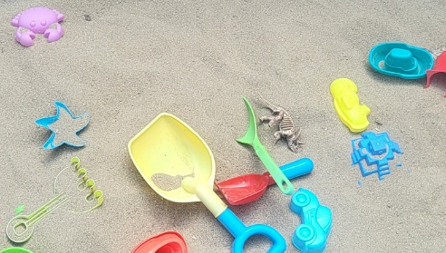

3세 외동아들은 반복적인 신체 만지작거림 및 긁어대는 행동할 때마다 하지말라고 해도 엄마의 지시에 반응하지 않아요. 특히, 수면 중 각성 및 울음에 대한 대응 등으로 인해 심리적 스트레스를 크게 겪고 있어요.
1. 양육 상황
아동은 발달 시기에 의한 명확한 표현이 부족하나, 감각적 자극 추구 혹은 정서적 불안을 신체 행동으로 드러내는 양상을 보이고 있음. 수면 리듬 불균형 및 낮 시간 행동 조절 어려이 지속되어 부모의 양육 부담이 가중되고 있음. 부모가 아동의 행동을 통제하거나 중단시키기보다, 반복적으로 달래며 감정적으로 대응하고 있으며, 이에 따른 양육 피로도가 높아지는 것으로 보임.
2. 정서·심리적 상태
첫째, 아동은 전반적으로 불안정한 정서 상태를 보이며, 일상적인 환경 변화나 자극에도 쉽게 예민하게 반응하는 경향이 있음. 정서 표현은 제한적이지만, 감정이 고조될 경우 울음이 과도하게 지속되며 자기 진정에 어려움을 보임. 신체를 반복적으로 긁거나 만지작거리는 행동은 정서적 긴장이나 내적 불안을 신체 감각으로 전환하여 해소하려는 시도로 해석됨.
둘째, 정서 반응은 일상생활에서 불안정한 예측 가능성이나 정서적 지지가 부족할 때 더욱 두드러지는 경향이 있으며, 아동은 안전 자극(예: 달래는 손길, 부모의 목소리 등)에 과도하게 의존하려는 모습을 보임. 아동의 기본적인 정서적 안정욕구가 충분히 충족되지 못하고 있음을 반영하며, 이로 인해 정서적 긴장이 신체화되거나 감각 자극을 통한 자기 진정 행동으로 나타나고 있음. 이는 감정 상태를 적절히 인지하고 표현하는 능력이 미숙함을 시사함.

3. 자아조절 능력
첫째, 아동은 자극에 대한 반응성이 높고, 외부 요구에 대한 반응 통제력이 낮은 모습을 보이며, 자아조절 능력의 발달이 지연된 상태임. 수면 중 깨어 돌아다니거나 소리를 지르는 행동, 지시에 대한 무반응, 울음의 장기화 등은 자기 조절 기능의 미비함을 보여주는 지표로 판단됨. 특히 감각 자극 추구나 반복적 신체 행동은 자기 진정 전략으로서 자아조절 능력의 부족을 보완하려는 행동으로 해석됨.
둘째, 아동은 정서적 각성이 높아진 상황에서도 스스로를 진정시키기 위한 전략이 발달되지 않아, 외부의 도움(특히 부모의 신체적 개입)에 의존함. 현재 시점에서는 자기 조절이 아닌 ‘타자 조절(external regulation)’에 머무르고 있음. 이는 자율성과 독립성을 발달시키는 데 기초가 형성되지 않았음을 의미함. 아동의 발달 수준을 고려할 때 감정 조절 및 행동 조절의 기초가 안정적으로 자리잡기 위해서는 일관된 반응과 정서적 모델링이 필요함.
4. 부모와의 관계
첫째, 아동은 주 양육자인 부모와의 관계에서 안정적인 애착 형성이 긍정적으로 이루어지지 않았을 가능성이 있으며, 부모의 반복적인 통제와 달램 사이에서 일관성 없는 양육 반응을 경험함. 부모는 아동의 행동을 통제하고자 하는 반면, 아동은 감정 조절이 어려울 때 부모의 신체적·정서적 지지를 과도하게 요구하거나 혼란스러운 방식으로 반응함. 이는 상호작용에서 예측 가능성과 일관성이 결여되어 있으며, 애착의 안정성이 취약한 상태임을 나타냄.
둘째, 부모는 아동의 행동을 제지하거나 달래는 방식에 있어 감정적으로 대응하는 경향이 있으며, 아동에게 혼란스러운 양육 신호로 작용함. 부모가 아동의 정서 상태에 민감하게 반응하기보다는 통제하거나 억제하려는 태도를 반복할 경우, 아동은 점차 부모를 정서적으로 ‘예측 불가능한 대상’으로 인식하게 될 위험이 있음. 이는 애착의 안정성뿐만 아니라, 장기적으로 아동의 대인관계 방식 및 자기 표현 방식에 영향을 줄 수 있음.
5. 자아개념의 특징
첫째, 아동은 아직 또래와의 사회적 상호작용 경험이 제한적이고, 주 양육자와의 관계 속에서 형성되는 초기 자아개념 발달 단계에 있음. 그러나 부모의 반복적인 제지, 반응 부족, 정서적 긴장 상태 속에서 자율성과 자기 효능감을 충분히 경험하지 못하고 있음. 이로 인해 ‘나는 스스로 할 수 있다’는 긍정적 자아개념이 형성되기보다는, 외부 자극에 따라 수동적으로 반응하거나, 자신을 불안정한 상태로 인식하는 초기 자아 형성이 진행되고 있음.
둘째, 자기 인식의 기반이 되는 신체 감각과 감정 경험이 안정적으로 통합되지 않아, 자기 표현에 있어 일관성과 주체성이 결여되어 있음. 부모의 반복적인 제지나 반응 부족은 아동에게 ‘내가 하는 행동은 문제 있다’는 부정적 자기 인식을 강화시킬 가능성이 있으며, 자기 가치감의 저하로 이어질 수 있음. 초기 자아개념의 형성은 이후 학령기 적응 및 사회적 관계 형성에도 영향을 미치므로, 현재 시점에서의 개입이 매우 중요함.
6. 놀이 개입 전략
1) 감정에 이름 붙여주기와 공감적 반응 제공
아동이 울거나 불안한 정서를 표현할 때, “속상했구나”, “이게 싫었구나”와 같이 아동의 감정에 언어를 붙여주는 방식으로 감정 인식을 돕고, 감정을 수용하는 태도를 보여줌으로써 자신의 감정을 안전하게 표현할 수 있는 기반을 마련해주는 것이 중요함. 이는 아동의 정서 조절 능력과 언어적 표현 발달에도 긍정적인 영향을 미침.
2) 일관되고 예측 가능한 양육 구조 제공
하루 일과 속에서 식사, 놀이, 낮잠, 정리, 수면 등 반복되는 패턴을 일정하게 유지함으로써 아동에게 안정감을 제공하고, 행동에 대한 예측 가능성을 높이는 것이 바람직함. 정해진 규칙과 루틴이 유지될 때 아동은 통제 가능한 세계를 경험하며 자기조절의 기초를 다질 수 있음.
3) 부정적 행동보다는 긍정적 행동 강화에 초점 맞추기
아동이 긍정적인 행동(예: 장난감을 제자리에 놓기, 지시에 따라 움직이기)을 했을 때 즉각적인 칭찬이나 스킨십, 작은 보상을 통해 긍정적인 행동을 강화하고, 부정적인 행동에 대해서는 주의를 주기보다 관심을 거두는 방식(무반응, 주의 전환 등)을 사용하는 것이 효과적임.
4) 감각적 욕구를 수용할 수 있는 환경 구성
아동이 반복적으로 신체를 만지작거리거나 긁는 행동은 감각 조절이나 자기 진정의 필요를 나타낼 수 있으므로, 촉감공, 부드러운 천, 감각 박스 등 감각 자극을 충족시켜줄 수 있는 대체물이나 활동을 제공하여 감각 욕구를 안전하게 해소할 수 있도록 돕는 것이 필요함.
5) 부모의 정서 관리와 양육 스트레스 해소 노력
부모가 지속적인 양육 스트레스를 경험할 경우, 그 정서적 불안이 아동에게도 고스란히 전달될 수 있으므로, 부모 자신도 감정 표현과 휴식을 위한 시간을 확보하고, 가족 내 지지체계를 활용하여 심리적 여유를 확보하는 것이 매우 중요함. 부모의 안정감은 곧 아동에게 안정된 애착을 형성하는 토대가 됨.
7. 놀이 방법
1) 감각통합 촉감 놀이
활동 내용: 밀가루 반죽, 촉감 클레이, 모래, 물, 젤리볼 등을 이용하여 손으로 만지고 눌러보며 다양한 촉감을 경험하게 함.
→ 효과: 감각적 자극을 안정적으로 경험함으로써 반복적인 긁기·만지작거리는 행동을 대체하고 감각 추구 욕구를 해소함.
2) 역할놀이(인형과 대화)
활동 내용: 동물 인형이나 아기 인형을 사용하여 인형에게 말을 걸고, 먹이고, 재우는 등의 역할놀이를 유도함. 보호자가 아이의 말을 반영하며 인형의 감정을 대신 표현해줌.
→ 효과: 아동이 직접 말로 표현하기 어려운 감정과 욕구를 인형을 통해 간접적으로 표현하며, 정서적인 해소와 안정감을 얻음.
3) 정리 게임 놀이
활동 내용: 블록이나 장난감을 가지고 놀고 난 후, 정해진 박스나 바구니에 색깔·모양별로 정리하는 놀이로 전환함. “누가 더 빨리 담을까?” 같은 게임 요소를 추가함.
→ 효과: 정리정돈 습관을 즐겁고 반복 가능한 활동으로 인식하게 하며, 지시에 대한 반응성과 순응력을 향상시킴.
4) 신체 놀이(이불굴리기, 터널 통과하기)
활동 내용: 이불을 깔고 구르기, 쿠션 터널 만들고 통과하기, 바닥을 네 발로 기어 다니는 등 신체를 활용한 놀이 제공.
→ 효과: 과잉 긴장되거나 억제된 감각과 근육을 이완시키며, 자기 자각과 신체 조절 능력을 길러줌. 수면 전 이완에도 효과적임.
5) 감정 그림책 읽기와 감정 따라하기
활동 내용: ‘화가 나면 어떻게 해요?’, ‘기분이 이상해요’ 등 감정을 다룬 그림책을 함께 읽고, 표정을 따라 하거나 감정 카드로 감정 맞히기 놀이를 진행함.
→ 효과: 감정 이름을 인지하고 표현하는 능력을 길러주며, 이후 울거나 불안할 때 말로 표현하는 기초를 형성함.
2025.04.09 - [상담] - 아동은 장난감 던지기, 울기, 편식, 수면 등 혼란스러운 양육
아동은 장난감 던지기, 울기, 편식, 수면 등 혼란스러운 양육
16개월 된 아들은 장난감을 던지는 행동을 자주 보이며, 원하는 것이 충족되지 않거나 좌절을 경험할 때는 울거나 큰 소리로 소리를 지르는 등을 강하게 나타내기 때문에 엄마는 아들과 일상적
think-sis.co.kr
2023.04.30 - [문학] - 걸음마기 신체발달과 그림책 - 시각, 청각, 촉각능력 발휘
걸음마기 신체발달과 그림책 - 시각, 청각, 촉각능력 발휘
걸음마기 신체발달과 그림책의 의의 걸음마기는 돌이 지난 시기(1세~3세)이다. 신체발달과 함께 소근육이 활발해져 자유롭게 움직일 수 있으며 다양한 운동 능력을 발휘할 수 있다. 돌이 지나면
think-sis.co.kr